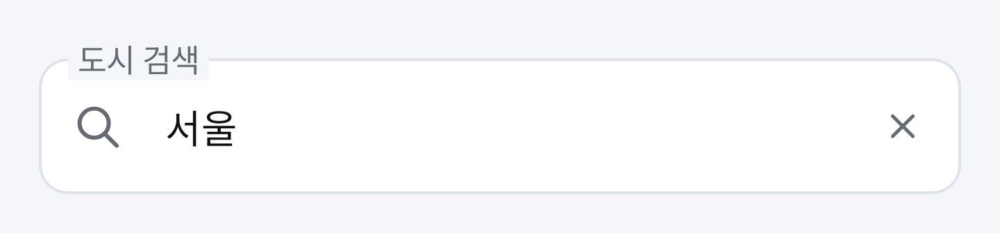
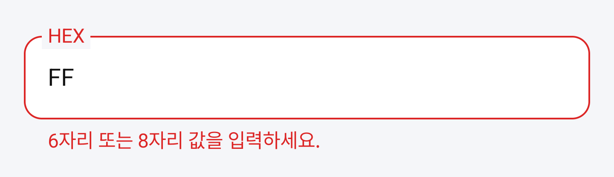
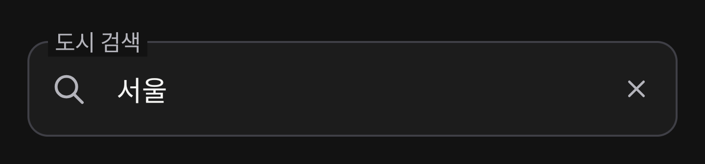
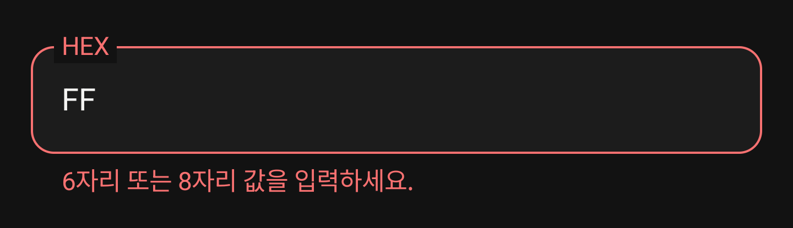

StudioTextField
검색, 이름, 문구, 수치와 HEX 입력을 하나의 필드 계약으로 제공합니다.
- 컴포넌트 ID
studio-text-field- 분류
- 입력
- 구현
StudioTextField·MyWidget/app/src/main/java/com/mywidget/editor/core/designsystem/component/StudioInputsAndAdjusters.kt:68- 주요 API
- value/onValueChange, label, placeholder, leadingIcon, clearable, trailingAction, errorText/isError, enabled/readOnly, keyboardOptions/keyboardActions, minLines/maxLines
- 지원 상태
- 빈 값
- 채운 값
- 포커스
- 비활성
- 읽기 전용
- 오류
- 변형
- 한 줄
- 여러 줄
- 검색·지우기
- 읽기 전용
- 수치·HEX
- 우측 인라인 동작
- 크기
- 모서리 12dp
- 지우기 48×48dp
- 테마·토큰
- surface
- outlineVariant
- primary
- error
- LocalTextStyle
- 접근성·사용 규칙
- 레이블과 오류 설명을 입력 필드에 연결합니다. 키보드 옵션과 줄 수를 호출부가 지정합니다.
- 공통 사용 여부
- 스튜디오 검색·색상·목록·수동 목표에서 사용하며 단순 이름·텍스트 모달로 이관
- 설계 품질
- IME 설정과 오류 표현을 분리함
- 판단
- 기존 컴포넌트 개선
- 판단 근거
- 로컬 입력의 오류·비활성·읽기 전용 표현을 통일합니다.
- 적용 상태
- 이름·텍스트 입력 호출처 이관
- 구현·문서
- 현재 소스 위치와 심볼 확인
- 렌더링
- 네이티브 캡처 있음
코드 예시
StudioTextField("FF", {}, Modifier.fillMaxWidth(), label = "HEX", errorText = "6자리 또는 8자리 값을 입력하세요.")Android 네이티브 예시
아래 캡처에 표시된 상태와 기기 조건을 확인했습니다.

411 × 891 dp · 560 dpi · 글꼴 1배 · API 35 · ko-KR
캡처 기준 HEAD
ff118cc8d · 소스 지문 73da2a0be891 · 2026-11-13T10:23:11.274577Z
411 × 891 dp · 560 dpi · 글꼴 1배 · API 35 · ko-KR
캡처 기준 HEAD
ff118cc8d · 소스 지문 73da2a0be891 · 2026-11-13T10:23:11.274577Z
411 × 891 dp · 560 dpi · 글꼴 1배 · API 35 · ko-KR
캡처 기준 HEAD
ff118cc8d · 소스 지문 73da2a0be891 · 2026-11-13T10:23:11.274577Z
411 × 891 dp · 560 dpi · 글꼴 1배 · API 35 · ko-KR
캡처 기준 HEAD
ff118cc8d · 소스 지문 73da2a0be891 · 2026-11-13T10:23:11.274577Z사용 화면
- 보관함 이름 변경
- AI 위젯 프롬프트
- AI 위젯 질문과 답변
- 문구 수정
- 색상·그라데이션 팔레트
- 목록 항목과 템플릿
- 아이콘 라이브러리·관리
- 직접 아이콘 그리기
- 연결 아이콘 이름
- 이미지 관리와 표시
- 수동 목표 편집
- 편집 문서 이름 변경
- 기능 연결 카탈로그
- 시간대 검색
- 걸음 목표
- 일반 소스 옵션
- 목록 고정 항목 추가 액션
- 설치 위젯 기능 연결 옵션
- 설치 위젯 기본 아이콘 편집
- 디자인 시스템 쇼케이스